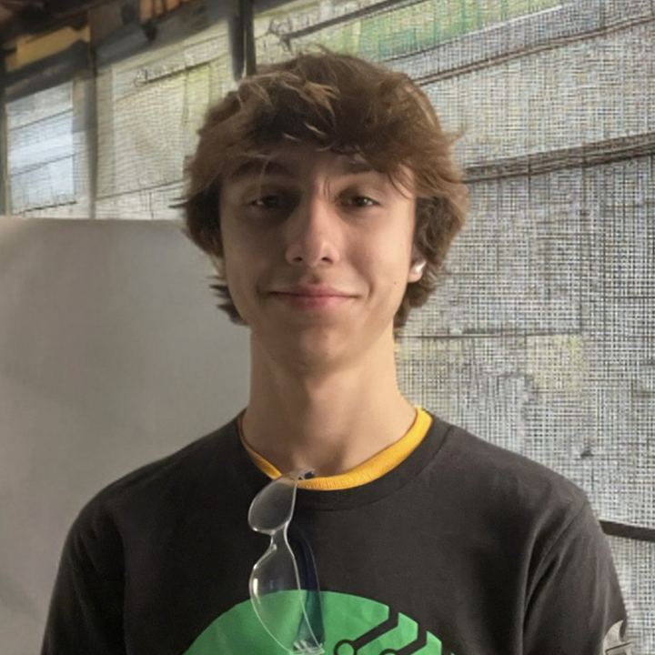

A servo library bug
Moving one finger moved several. I read the chip's pin routing directly, found the library was sending multiple servos' signals to the same output, and replaced it with direct hardware PWM.
Robotics Engineering · UC Santa Cruz
I build robots, and the software that runs them.
01 / Personal project · 2026
JoebotHand is a 3D-printed, five-finger hand that mirrors a real one in real time. A web app tracks your fingers through a phone camera and streams each finger's position over Wi-Fi to an ESP32-S3, which drives five servos that pull the fingers closed with fishing-line tendons.
On the phone
In the hand
Try it
This runs the same tracking math as the real hand, right here in your browser: 21 landmarks become joint angles, joint angles become a curl percentage for each finger, and the hand on screen follows.
Your video never leaves this page. Nothing is recorded or uploaded.
Until then, it's playing its startup wave.
The hardest problem
Browsers only allow camera access on secure pages, and a secure page isn't allowed to talk to an insecure device on the local network. Hosting the app online was a dead end: it could see my hand but couldn't reach the robot.
So I made the hand its own secure website. The ESP32 runs a Wi-Fi hotspot and serves the app over HTTPS, using a real certificate for a domain I own that points at the hand's local address. A phone joins the hotspot, opens the page with no security warning, and everything works with no internet at all.
Moving one finger moved several. I read the chip's pin routing directly, found the library was sending multiple servos' signals to the same output, and replaced it with direct hardware PWM.
The app, MediaPipe's WebAssembly runtime and the model are gzipped into 75% of the flash partition and cached on the phone, so it works offline.
Per-finger angle limits protect the servo gears. A watchdog opens the hand if the phone disconnects, and the servos go limp after a minute of silence.


Iteration
Full demo
Power-on, joining the hand's Wi-Fi, slider control and camera tracking. The repository has the firmware, the web app, the wiring schematic, the debugging sketches and the STL for my forearm.
Credit where it's due: the hand and finger design comes from Viral Science's flex-sensor robot hand tutorial. Mine are the redesigned forearm and stand, the wiring, the move from Arduino to ESP32-S3, camera tracking in place of flex sensors, the self-hosted web app, and the firmware.
02 / FRC Team 1678 · 2024–2026
For two seasons I was a front-end developer on Software Scouting at Citrus Circuits, FRC Team 1678. The subteam is 21 students building six apps that record what every robot does in every match, then turn it into the data the drive team and strategists use to plan matches and pick alliance partners.
My app
I designed and built about 90% of the 2026 Objective Match Collection app, interface design included. It's the tablet app scouts in the stands use to record a timeline of everything one robot does. Every qualification match, 18 scouts run it at once, three per robot.
KotlinJetpack ComposeAndroid StudioGit
Team codebase
Viewer is how the drive team and strategists read the data. I built multi-team graphs, which put several teams on one chart or split them into a scrolling list, and the team comparison page that lines up any data point side by side.
"You made the multiple team graphs? That's the feature I used the most."A 1678 coach
In 2026 Viewer was rewritten from Android-only to Kotlin Multiplatform, so it runs on Android, desktop and the web.
Team codebase
I added "Do Not Pick" flags and match marks. A strategist can flag a team for the rest of the event, or mark one team in one match to come back to, and both collect into sheets they can pull up later.
Smaller features in someone else's code taught me the unglamorous part: branches, pull requests, code review, and not breaking what 20 other people are building on.

The auto screen, as scouts see it.


Also at 1678
Through the team's youth programs I taught and mentored kids aged 8 to 14. Explaining a lever to a ten-year-old turns out to be good practice for explaining anything.

I ran the drone section of the summer robotics camp on my own: I picked which drones to buy, wrote the slides, the safety rules and the lesson plans, and taught kids to code them through rings and onto targets. The teacher kept my materials for later camps.

For a year each at Davis Waldorf and Davis School for Independent Study, I was the weekly robotics instructor, teaching kids to build, code and drive competition robots. I wrote my own lessons on levers, counterweights and weight distribution. That's one of my slides.

At youth VEX IQ tournaments I've been the emcee, the queuer, a referee and the person resetting the field. And at the farmers market, the one handing a kid the controller.
03 / VEX V5 · Two years
Alongside Citrus, I spent two years building VEX V5 robots in robotics class. Both years I went looking for the one mechanism nobody else in the room had.

Year 1 · Over Under · with one teammate
A gear with half its teeth shaved off. While the teeth mesh, the motor winds the arm back against rubber bands. When the gap comes around, the arm lets go and slaps the game piece across the field. No other team had one, so we scored from our side while everyone else drove back and forth.

Year 2 · High Stakes · solo build
I designed and built this one alone: a roller intake, a chain elevator that lifts and scores a game piece with one button, and a pneumatic clamp. Nobody in the class had gotten pneumatics working. I figured it out, and the clamp became the robot's biggest edge in the tournament.
PneumaticsChain elevatorRoller intake4-motor drive
04 / About

I'm a first-year Robotics Engineering student at UC Santa Cruz, from Davis, California. I like the place where software meets something that physically moves.
I got here sideways. As a kid I taught myself Blender to make visual effects for short films, so I was thinking in 3D long before I opened a CAD program. Robotics class turned that into building things, and Citrus Circuits turned it into writing software that other people depend on. The hand at the top of this page is where it all meets: printed parts, a microcontroller, a web app and a vision model that have to agree with each other.
What I'm looking for
A research lab where I can be useful while I learn. I'm comfortable in firmware, in app code, in CAD and with a soldering iron. I document what I build, and I finish it.

05 / Contact
If you're reading this because I emailed you, thank you for clicking. A reply to that email is the best way to reach me.